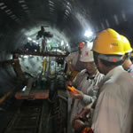
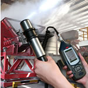
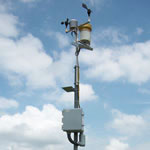

测量pH、电导率、溶解氧、浊度、COD、BOD、重金属离子、余氯总氯、氨氮、总磷...等水质参数；适用于地表水、地下水、饮用水、生活污水、工业废水等场合，广泛应用于环保、自来水、污水处理、水文水利、农业…

甲醛、氨气、臭氧、TVOCs、硫化氢、二氧化硫等150多种有毒气体及易燃易爆气体检测。用于室内空气质量检测、环境空气质量监测、工作场所安全检测以及工业过程测量控制等。独特的固态传感器，寿命长达10年以上…

实时粉尘浓度测量，PM2.5，PM10，个体粉尘采样和空气采样，环境噪声，个体噪声剂量测量，振动测量，环境温度湿度，光照度测量，无线电/微波，电场磁场强度，射线和辐射测量…

气象传感器测量风速、风向、温度、湿度、气压、太阳辐射、雨量等气象参数，气象站长期监测记录气象历史数据。监测数据可以定期现场下载或实时远传到监测中心，并通过专用软件进行各种分析…
流速、流量、水位、水深、水压、水质、泥沙、降雨、蒸发等实时监测。数据记录器可长期监测记录水文历史数据，监测数据可以定期现场下载或实时远传到监测中心，并配备专用分析软件。适用于江河、湖泊、水库、…
英国Bellingham+Stanley (简称B+S) 公司是全球专业从事折光仪和旋光仪生产的厂家，已有100年历史，其生产的各种折光仪和旋光仪质量精良，享誉全球。上海牧晨电子技术有限公司一级代理英国B+S全线产品，负责…
电子天平，玻璃器皿，移液器，培养箱，试验箱，干燥箱，制冷及低温储存，加热装置，化学试剂…